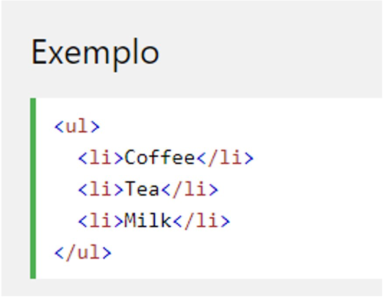
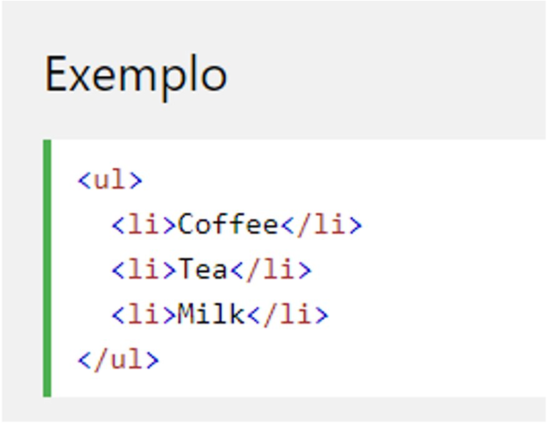

Lista Não Ordenada
Uma lista não ordenada começa com a tag <ul> Cada item da lista começa com a tag <li>
Os itens da lista serão marcados com marcadores (pequenos círculos pretos) por padrão:

Uma lista não ordenada começa com a tag <ul> Cada item da lista começa com a tag <li>
Os itens da lista serão marcados com marcadores (pequenos círculos pretos) por padrão:
